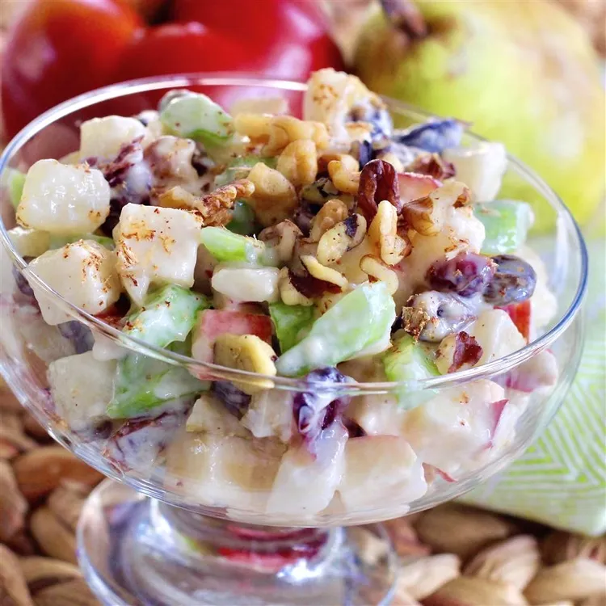

Autumn Waldorf Salad is a seasonal variation of the classic New York dish, celebrating the crisp, vibrant flavors of the harvest season. The salad features a base of crunchy apples and pears tossed with fresh celery, red grapes, and toasted walnuts. Everything is brought together in a light, creamy dressing made from mayonnaise or Greek yogurt, accented with a touch of honey and lemon juice to enhance the natural sweetness of the fruit.
This version often incorporates rich autumn additions like tart dried cranberries, crumbled blue cheese, or a bed of earthy dark greens like spinach or kale. It delivers a satisfying contrast of textures—crisp, juicy, and crunchy—making it an excellent choice for a light lunch or a refreshing side dish for Thanksgiving and holiday dinners.